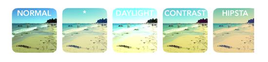
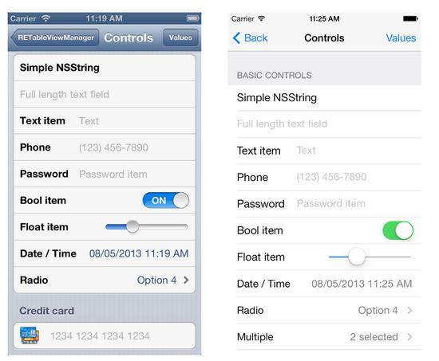
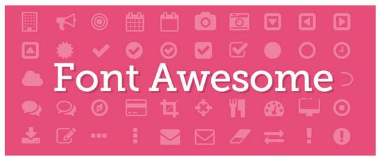
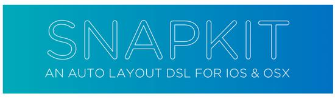
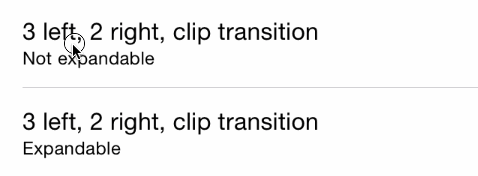
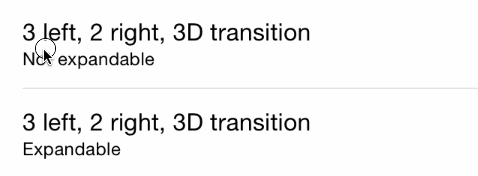
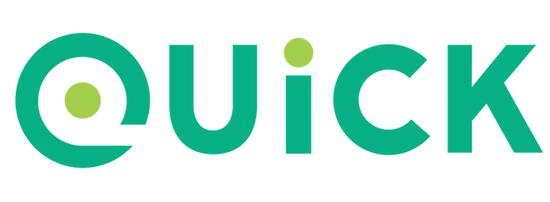
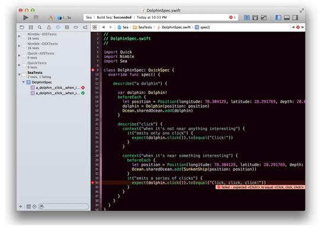
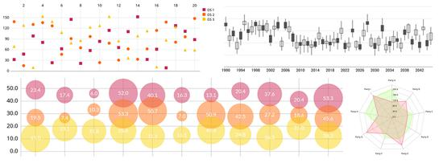

I love open source, and I love even more the developers who spend their precious spare time creating miracles. Thank them for freely sharing the fruits of their hard work with everyone. Open source authors and contributors, you are truly amazing, and thank you for all your contributions.
Since I'm the kind of person who can't rest without collecting everything, here I've picked some iOS open-source libraries based on my personal taste. The order of these projects is completely random, and each one is absolutely awesome. The vast majority support CocoaPods, so adding them to your Xcode project is a piece of cake.
At the end of this article you'll find a "long read, enter with caution" version — a simple list containing only titles and project links. If you find this article useful, please share it with other iOS developers. Even the best wine needs a sign.
DZNEmptyDataSet is a fairly standard iOS approach for handling empty table views and collection views. By default, if your table view is empty, the screen is empty, which doesn't make for a good user experience.

With this library, you just need to conform to a few protocols, and iOS will automatically handle collection views properly and display user messages in a suitable and attractive way. Every iOS project can handle it automatically, no need to spend effort on each one.
Does your app need a simple, beautiful, and reliable calendar component? Now there is one — PDTSimpleCalendar is arguably the best calendar component for iOS. You can customize it in every way, both in behavior and appearance.
They say Core Data is simple and easy to use. Then they say it's great and works wonderfully. Huh? Really, Apple? The huge amount of boilerplate code added to every project hardly meets the standard of simplicity and ease of use. Not to mention adding, removing, and updating a whole bunch of entities, saving contexts, creating different Core Data stacks for different environments, and so on. Of course, I really like Core Data, but Apple could definitely simplify it much better — using the MagicalRecord approach.
MagicalRecord is like a wrapper around Core Data, hiding all the irrelevant parts. If you've ever used the active record pattern (like in Ruby on Rails), you'll know what I mean. Highly recommended — if you use Core Data in your apps, you really should try it.
4. Chameleon
If you've read this far, I'm guessing you're more likely a code monkey than a design lion. Here's something perfect for you.
Chameleon is an iOS color framework. It extends UIColor with modern flat colors in a really beautiful way. You can also use it to create palettes with custom colors. It has many other uses, so check out the readme. If you want your app to look great, definitely add this library to your project.

5. Alamofire
Alamofire is a clean networking library written in Swift. Have you ever used AFNetworking? Alamofire is its younger sibling. Younger and more modern, of course (AFNetworking is written in Objective-C).

If you need to do networking work such as downloading, uploading, fetching JSONs, and so on, Alamofire is exactly what you need. With more than 8,000 stars on GitHub, you can't go wrong.
Don't you find the standard UITextField a bit boring? I think so too — meet TextFieldEffects! Enough talk, just look at a few examples:


Yes, they're all simple drop-in controllers. You can even use IBDesignables in your storyboard.
Unfortunately, this library doesn't support CocoaPods (if you're from the future and this ever changes, be sure to let me know on Twitter), but it supports Carthage. Just download the project from GitHub and drop it into your workspace.
7. GPUImage
Have you ever written a camera app? If not, you're bound to run into this library soon.
GPUImage provides a GPU-accelerated camera effect (for both photos and videos) and processes at lightning speed. There are hundreds of apps in the App Store using this library. I have an app that uses GPUImage too. It has 8,869 stars on GitHub and is still growing.

8. iRate
What's the best way to get more reviews on the App Store? I lack solid data to answer that question, but if I had to guess, I'd suggest asking users. Maybe that's a bit old-fashioned — most developers now create custom in-app alerts.
But if you don't have the time, or don't want to implement it from scratch, you'd better use iRate. This is iRate — a small library — you can drop it into your project, forget about survey prompts and the like, and iRate will handle the problem for you at the right time.
Whether you like the singleton pattern or not, managing a single GameCenter is far better than the other, opposite patterns we know. (Your game has only one GameCenter, right?)

Honestly, managing vanilla GameCenter on iOS isn't too hard, but with this library it's even simpler and quicker. Isn't it better to make a good thing even better?
I used this in one of my games and had a great experience.
Pay attention to this one — it's really great! One of my favorite iOS controls. PKRevealController is a sliding sidebar menu (can slide left, right, or both directions at the same time) with just a gentle swipe of your finger (or a button press, but that isn't as cool when sliding).
I've tried some other libraries that offer this kind of control, and PKRevealController is the best. Easy to install, highly customizable, and with great gesture recognition. It could pass for a standard control in the iOS SDK.
Have you ever used the Slack iOS app? If you work at a large software company, you might have. For those who haven't? — Slack is impressive. Apps that use Slack are like that too, especially when used as an excellent, custom text input control. Then you have ready-made code to drop into your app.
Self-sizing text area? Try it.
Gesture recognition, autofill, media merging? Try it.
Quick drop-in solution? Try it.
What more could you want?
RETableViewManager helps you dynamically create and manage table views. It gives us predefined cells (bool, text, date, and so on — see the screenshot below), but you can also create custom views and use them alongside the default ones.

The screenshot on the left looks very rigid! That's all you can do in storyboard without this library, but sometimes code is better than a visual editor.
13. PermissionScope
With this library, you can inform users of the required system permissions before asking them, giving users a better experience. Higher acceptance -> more active users -> higher retention rate -> better data -> higher download rates. Strongly recommend this pod.
14. SVProgressHUD
This image is loading normally, without needing to wait too long or refresh the page. That's exactly how SVProgressHUD behaves in your app. If you need a customizable loading indicator, this is it (perhaps the best one).
15. FontAwesomeKit
Font Awesome is amazing. With it, you can easily add fonts to your project and use them in many ways.

16. SnapKit
Like Auto Layout? Of course you do!At least you like it when it's created in storyboard. Creating constraints purely in code is very painful, but luckily we have SnapKit. Once you put it to use, you can write constraints simply and intuitively.

17. MGSwipeTableCell
This is another UI component commonly seen in many apps. Apple should consider adding something similar to the standard iOS SDK. Swipeable table cells are the best description of this pod, and also the best.



These are just three of the animation types; there are many more variations. Check out the readme.
18. Quick
Used for unit testing in Swift (also works with Objective-C), integrated with Xcode. If you're a fan of Objective-C, I recommend Specta instead, but for Swift users, Quick is the best choice.


19. IAPHelper
In-app purchases give us a lot of sample code, and this library throws that code away, providing a simple wrapper around most common tasks related to money transactions.
20. ReactiveCocoa
Well, this one is a little monster.
ReactiveCocoa is not like the other libraries on this list; it isn't a small drop-in project. ReactiveCocoa brings a completely different programming style and structure based on signals and data flows. First, you need to forget everything you know in order to understand how it works. It's very challenging, but very rewarding.

Teaching ReactiveCocoa here isn't really appropriate, but if you're interested, I'll provide some good resources:
- Getting Started with ReactiveCocoa
- Mattt Thompson：ReactiveCocoa
- ReactiveCocoa Tutorial – The Definitive Introduction: Part 1/2
Note: For our friends in the iOS development community, this will be a slightly technical one.
21. SwiftyJSON
Make JSON parsing in Swift simple.
22. Spring
Make animations better in terms of simplicity, chainability, and declarativeness.

23. FontBlaster
Make loading custom fonts easier.
24. TAPromotee
Cross-promotion is one of the best marketing strategies you can implement for free. Using this library makes it extremely simple—so simple that it's impossible not to use it. Add TAPromotee to your Podfile, configure it for free, and enjoy more downloads.

25. Concorde
Are you loading a bunch of JPEGs in your app? With Concorde, you can solve this in a much better way—it's a huge improvement.
26. KeychainAccess
A little helper for managing Keychain access.

27. iOS-charts
Last but not least—the iOS charting library! Very useful and beautiful, no need for me to say more here. Scroll down and you'll see what you can do with it.

That's right, everything has become drop-in components (or maybe "code-in components").


Unfortunately, it doesn't support CocoaPods yet, so you'll have to manually drag it into your Xcode workspace.
Click me to share notes
<p style="font-size:14px;">The note must be an extension of the content of this article!</p><br> <p style="font-size:12px;"><a href="../tougao.html" target="_blank">To submit an article, click here</a></p> <p style="font-size:14px;"><a href="./runoob-user-test-intro.html" target="_blank">How to obtain a registration invitation code</a></p> <h3 class="text-muted"><i class="fa fa-info-circle" aria-hidden="true"></i> You must <a href=".." class="runoob-pop">log in</a> before sharing a note!</h3> <p><a href="./runoob-user-test-intro.html" target="_blank">How to obtain a registration invitation code</a></p>